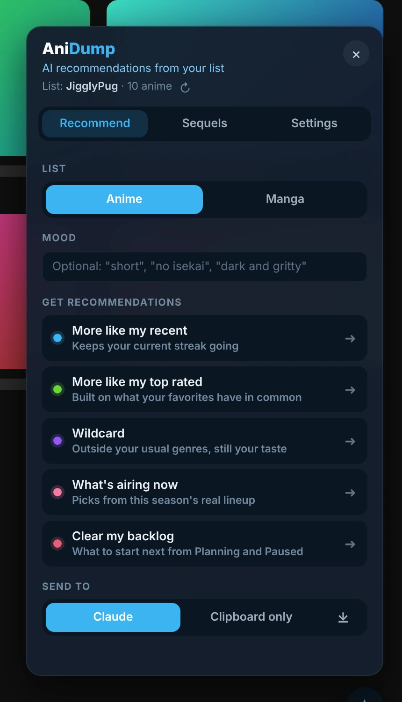
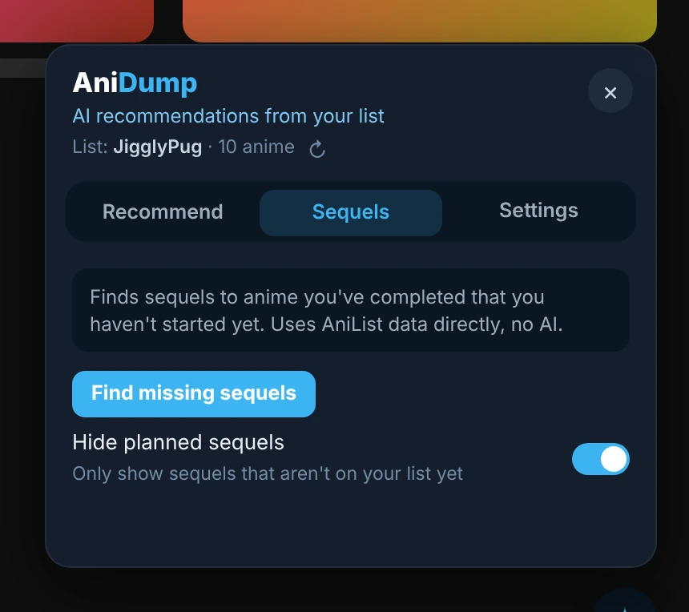
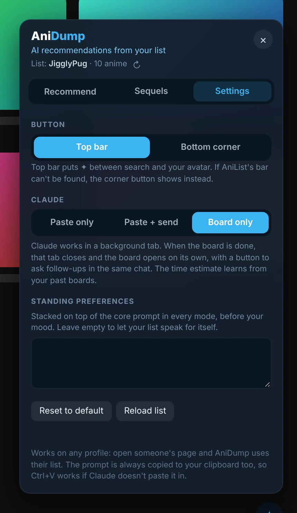

Desktop userscript
AniDump
AI recommendations from your AniList list.
Click the ✦ button on AniList and pick a mode. AniDump has Claude build a recommendation board from your list in the background, then opens it for you.
anilist.co, claude.aiv2.7.5

Features
Five ways to find your next show
More like my recent, more like my top rated, wildcard, what's airing now and clear my backlog. For anime and manga.
Built from your actual list
Your AniList history drives every recommendation, with an optional mood like "short" or "no isekai".
Hands it to Claude
Claude builds a recommendation board in the background and AniDump opens it for you. Or just copy the prompt.
Sequel finder
Finds sequels to things you've finished but haven't started, straight from AniList.
Your standing preferences
Taste notes added to every prompt, if you want them.
A closer look


Requires a claude.ai account, signed in in the same browser, for the Claude features. Clipboard mode works without one.
More for desktop